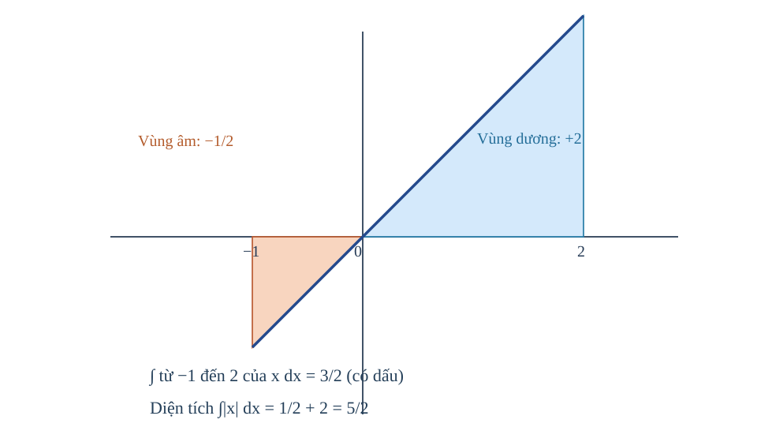
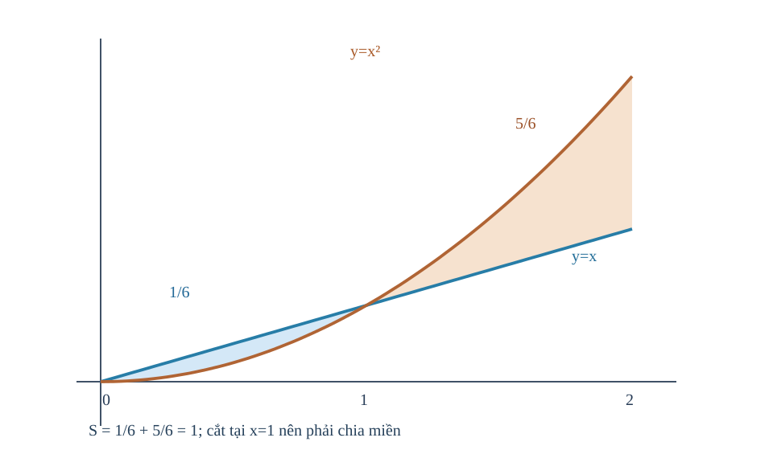
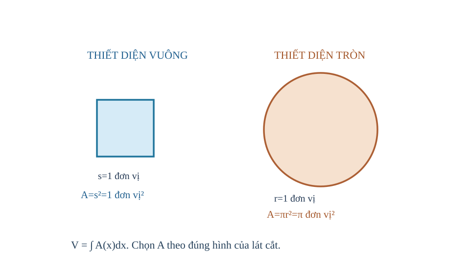
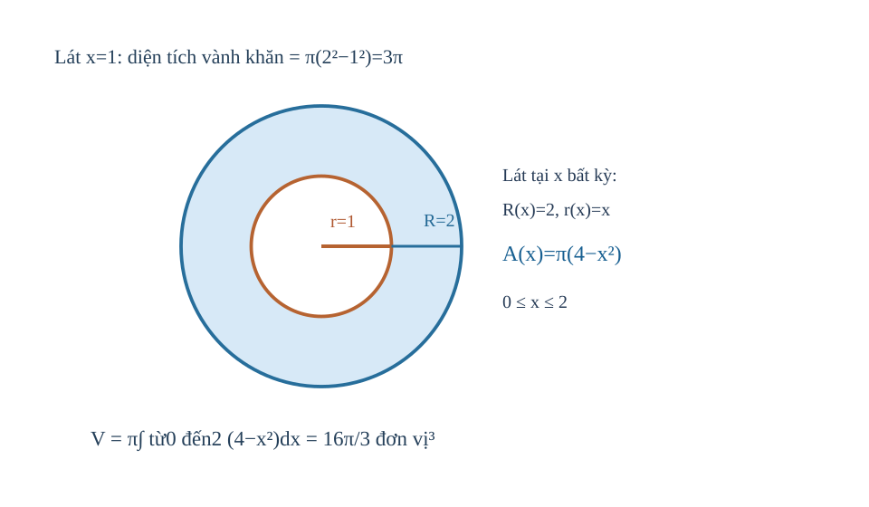

HỌC THEO CHUYÊN ĐỀ · CĐ11 · TOÁN THPT
Khám phá thêm: Mô hình trực quan Chuyên đề 11 (tùy chọn).
Kiến thức
1. Từ biết tốc độ biến đổi đến khôi phục đại lượng
Nếu một thiết bị đo cho ta vận tốc theo thời gian mà không cho trực tiếp vị trí, ta có thể hỏi: liệu có thể khôi phục vị trí từ vận tốc ấy không? Đạo hàm biến một đại lượng thành tốc độ biến đổi, còn nguyên hàm giúp đi ngược lại. Nhưng đi ngược không xác định ngay vị trí ban đầu: các hàm chỉ khác hằng số đều có cùng đạo hàm. Chính vì thế ta cần điều kiện đầu để chọn đúng một đại lượng.
Khi muốn biết đại lượng đã thay đổi bao nhiêu trong cả một quãng thời gian, ta cộng những thay đổi rất nhỏ thành tích phân xác định. Từ đây xuất hiện hai câu hỏi phải phân biệt: thay đổi ròng có thể dương hay âm, còn độ dài, diện tích hay thể tích không thể âm. Bài học đi từ nguyên hàm qua tích phân có dấu đến hình học lát cắt, không nhảy thẳng vào công thức diện tích và thể tích.
1.1. Nhận ra nguyên hàm từ đạo hàm
Giả sử ta biết một đại lượng thay đổi nhanh thế nào, nhưng lại muốn tìm quy luật của chính đại lượng ấy. Đó là lúc ta đi ngược từ đạo hàm về nguyên hàm.
ĐỊNH NGHĨA — Nguyên hàm. Hàm \(F\) là một nguyên hàm của \(f\) trên một khoảng \(I\) nếu \(F'(x)=f(x)\) với mọi \(x\in I\). Trên một khoảng, nếu \(F\) là nguyên hàm thì họ nguyên hàm có dạng \(F(x)+C\), \(C\in\mathbb R\); phải phân biệt các thành phần miền rời.
Không chỉ trên khoảng mở: ta có thể xét nguyên hàm trên một khoảng, một nửa khoảng hoặc một đoạn \(K\). Chẳng hạn với \(K=[a,b]\), tại đầu \(a\) ta hiểu \(F'(a)=f(a)\) theo đạo hàm bên phải, còn tại đầu \(b\) theo đạo hàm bên trái; không đòi lấy đạo hàm ở phía nằm ngoài đoạn. Nếu \(f\) liên tục trên một khoảng thì \(f\) có ít nhất một nguyên hàm trên khoảng ấy; đây là điều kiện đủ bảo đảm tồn tại, không phải yêu cầu bắt buộc trong định nghĩa. Khi \(F'=f\), ký hiệu \(dF(x)=F'(x)\,dx=f(x)\,dx\) gọi là vi phân của \(F\); ký hiệu này mô tả quan hệ đạo hàm–nguyên hàm, không cho phép coi \(\int f(x)\,dx\) là phép nhân đại số tùy ý.
Ví dụ, với \(f(x)=4x^3+2\), ta nhận thấy \((x^4)'=4x^3\) và \((2x)'=2\), nên \(F(x)=x^4+2x\) là một nguyên hàm. Nhưng \(x^4+2x+5\) cũng có đạo hàm ấy, bởi đạo hàm của hằng số bằng 0. Vì thế khi hỏi họ nguyên hàm, ta phải viết \(F(x)=x^4+2x+C\). Hãy kiểm bằng cách lấy đạo hàm ngược; phép tích phân bất định không phải một phép nhân với ký hiệu \(dx\).
Ví dụ
Đề bài: Tìm mọi nguyên hàm của f(x)=9x²−4x+1 trên ℝ.
Lời giải: Lấy từng hạng tử: F(x)=3x³−2x²+x+C. Kiểm F′(x)=9x²−4x+1 trên ℝ. Hằng C cần có vì đạo hàm của mọi hằng số bằng 0.
Vận dụng Tìm họ nguyên hàm của \(f(x)=8x^3-2\). Em kiểm lại được bằng đạo hàm không?
Đối chiếu
\(F(x)=2x^4-2x+C\). Đạo hàm của biểu thức này là \(8x^3-2\), đúng bằng \(f\). Nếu em quên \(+C\), hãy thử cộng thêm 5 vào nguyên hàm của mình rồi lấy đạo hàm: kết quả vẫn không đổi. **Kiểm lỗi** Nếu em chỉ thấy một nguyên hàm mà bỏ \(+C\), hoặc kết luận bằng cách nhìn dạng hàm, đọc **Kiến thức 1.1**, giải **Bài 3** (đạo hàm để kiểm) và **Bài 5** (tìm cả họ). Cứ lấy đạo hàm kết quả để đối chiếu với \(f\).1.2. Một họ nguyên hàm và điều kiện đầu
TÍNH CHẤT — Một họ nguyên hàm và điều kiện đầu. Các nguyên hàm khác nhau bởi hằng số; điều kiện đầu chọn một hàm. Nếu hai hàm có cùng đạo hàm, số liệu ban đầu có chọn ra đúng một hàm không? Ta đã biết viết F₀(x)+C, biết a thuộc khoảng và F(a)=b. Nếu f liên tục trên một khoảng, mọi nguyên hàm khác nhau một hằng số trên khoảng ấy. Giá trị đầu F(a)=b cho phương trình F₀(a)+C=b, giải C; không áp dữ kiện ở một thành phần miền để khóa hằng trên thành phần tách rời. Hãy kiểm cả điều kiện và đạo hàm.
Chẳng hạn, F'=3x²−4, F(1)=5. Họ F=x³−4x+C, thay x=1 cho 1−4+C=5 ⇒ C=8, F=x³−4x+8. Kiểm F'=3x²−4 và F(1)=5.
Ví dụ
Đề bài: Biết F′(x)=4x−3 trên ℝ và F(2)=5. Tìm F(x).
Lời giải: Từ F′ suy ra F=2x²−3x+C. Điều kiện F(2)=8−6+C=5 cho C=3, vậy F(x)=2x²−3x+3. Thế lại x=2 và lấy đạo hàm để kiểm cả hai điều kiện.
Vận dụng F'=2x+1 và F(0)=7: tìm F.
Đối chiếu
F=x²+x+7. Nếu thay F'(0)=7, bạn đã dùng sai loại dữ kiện; F(0) mới là vị trí ban đầu. **Kiểm lỗi** Nếu em thay điều kiện \(F(a)\) thành \(F'(a)\) hoặc không tìm hằng \(C\), đọc **Kiến thức 1.2**, giải **Bài 8** rồi **Bài 10**. Phải thỏa đồng thời đạo hàm và giá trị ban đầu.1.3. Nguyên hàm lũy thừa
Từ định nghĩa, ta suy ra nguyên hàm lũy thừa và tổng. Vì sao n=−1 là trường hợp đặc biệt, còn các lũy thừa khác chia được cho n+1? Ta sử dụng đạo hàm của x^{n+1} và tính tuyến tính, miền x^n.
CÔNG THỨC — Nguyên hàm lũy thừa. Với \(n\ne-1\) và trên khoảng mà biểu thức thực \(x^n\) được xác định, \(\displaystyle\int x^n\,dx=\frac{x^{n+1}}{n+1}+C\). Trường hợp \(n=-1\) dùng \(\ln|x|+C\) trên từng khoảng tránh \(0\); không thay trực tiếp vào mẫu \(n+1=0\).
Với αf+βg, nguyên hàm là αF+βG+C. Không để +C riêng từng hạng rồi tính thành nhiều hằng độc lập trong cùng một tổng.
Xét ví dụ: ∫(6x²−4x+3)dx=2x³−2x²+3x+C. Vì đạo hàm 2x³ là6x², −2x² là−4x và 3x là3. Kiểm từng hạng giúp tránh lỗi hệ số.
Ví dụ
Đề bài: Tính ∫(2x⁵−4x³+6)dx.
Lời giải: Trên ℝ, dùng tính tuyến tính và quy tắc lũy thừa: ∫2x⁵dx=x⁶/3, ∫(−4x³)dx=−x⁴, ∫6dx=6x. Kết quả F=x⁶/3−x⁴+6x+C, đạo hàm F′=2x⁵−4x³+6.
Vận dụng ∫(5x⁴+2x)dx=?
Đối chiếu
x⁵+x²+C. Nếu không chia hệ số mũ mới, kiểm đạo hàm ngược sẽ phát hiện hệ số dư. **Kiểm lỗi** Nếu em quên chia hệ số theo mũ mới khi tính nguyên hàm lũy thừa, đọc **Kiến thức 1.3**, làm **Bài 14** rồi **Bài 16**. Lấy đạo hàm ngược để phát hiện hệ số thiếu.1.4. Nguyên hàm 1/x trên khoảng
CÔNG THỨC — Nguyên hàm 1/x trên khoảng. Nguyên hàm 1/x đặc biệt vì số mũ −1 làm mẫu công thức bằng 0. Tại sao ln|x| xuất hiện, và có thể dùng một C qua x=0 không? Ta bắt đầu từ logarit thực, (ln|x|)'=1/x khi x khác0, miền liên thông. Đạo hàm ln|x| bằng1/x với x≠0; vì vậy ∫dx/x=ln|x|+C trên từng khoảng (-∞,0) hoặc (0,+∞). Không có nguyên hàm liên tục vượt điểm 0 cho 1/x do hàm gốc không xác định ở đó. Trên miền rời có thể dùng C_- và C_+ khác nhau; một điều kiện tại −1 không xác định hằng ở nhánh dương.
Chẳng hạn, Trên x<0, ∫(3/x)dx=3ln(−x)+C. Lấy đạo hàm 3·(−1)/(−x)=3/x, đúng. Chọn ln(−x) vì −x>0 trên nhánh âm; ln x không hợp lệ.
Ví dụ
Đề bài: Tìm F′(x)=3/x trên x<0, biết F(−2)=7.
Lời giải: Trên khoảng (−∞,0), F(x)=3ln|x|+C=3ln(−x)+C. Thay x=−2: 3ln2+C=7, nên C=7−3ln2. Không dùng ln x trên khoảng x<0 hoặc nối qua x=0.
Vận dụng F'=1/x trên x<0, F(−1)=2. F là gì?
Đối chiếu
F(x)=ln(−x)+2 trên x<0. Không viết ln x ở x âm; sau đó kiểm đạo hàm trước khi kết luận. **Kiểm lỗi** Nếu em dùng \(\ln x\) cho \(x<0\) hoặc ghép hằng số xuyên qua điểm \(x=0\) bị loại, đọc **Kiến thức 1.4**, làm **Bài 17** và **Bài 21**. Luôn chọn một khoảng xác định không qua 0.1.5. Hàm mũ và hệ số bù
CÔNG THỨC — Hàm mũ và hệ số bù. Hàm mũ đòi hỏi hệ số bù theo đạo hàm của biểu thức trong. Nếu e^{2x} thay đổi nhanh gấp đôi lớp ngoài, phải sửa nguyên hàm bằng cách nào? Cần nhớ dây chuyền (e^{kx})'=k e^{kx}, (a^x)'=a^x ln a. Với k≠0, nguyên hàm e^{kx} là e^{kx}/k+C; với a>0,a≠1, nguyên hàm a^x là a^x/ln a+C. Hệ số bù chính là nghịch của hệ số khi đạo hàm. Không áp công thức lũy thừa x^n cho a^x, vì vị trí biến khác.
Chẳng hạn, ∫(6e^{3x}+2^x)dx=2e^{3x}+2^x/ln2+C. Đạo hàm ngược cho 6e^{3x}+2^x. Chọn đối chiếu quy tắc mũ và chain trước.
Ví dụ
Đề bài: Tính ∫(3e^{3x}+2^x)dx.
Lời giải: Vì (e^{3x})′=3e^{3x} và (2^x/ln2)′=2^x (2>0,2≠1), họ nguyên hàm là e^{3x}+2^x/ln2+C. Kiểm đạo hàm để xác nhận hệ số bù.
Vận dụng Tìm ∫5e^{5x}dx.
Đối chiếu
e^{5x}+C. Nếu ra 5e^{5x}, đạo hàm ngược sẽ cho 25e^{5x}, phải chia5. **Kiểm lỗi** Nếu em đạo hàm ngược \(e^{kx}\) hay \(a^x\) mà thiếu hệ số bù, đọc **Kiến thức 1.5**, làm **Bài 25** và **Bài 27**; phải dùng \(\ln a\) khi cơ số là \(a>0,a\ne1\).1.6. Nguyên hàm lượng giác
CÔNG THỨC — Nguyên hàm lượng giác. Với lượng giác, kiểm dấu và đơn vị radian. Nguyên hàm sin và cos có luôn giữ nguyên dấu không? Để xác định điều đó, cần xét (sin x)'=cos x và (cos x)'=−sin x với x radian. ∫cos(kx)dx=sin(kx)/k+C, ∫sin(kx)dx=−cos(kx)/k+C khi k≠0 và góc radian. Dấu trừ của nguyên hàm sin đến từ đạo hàm cos. Không dùng công thức này nguyên dạng khi biến x là số đo độ; phải quy đổi đơn vị.
Từ hai đạo hàm \((\tan x)'=\dfrac{1}{\cos^2x}\) (khi \(\cos x\ne0\)) và \((\cot x)'=-\dfrac{1}{\sin^2x}\) (khi \(\sin x\ne0\)), ta còn hai nguyên hàm cơ bản mà chỉ học sin và cos sẽ bỏ sót:
Mỗi công thức được áp dụng trên một khoảng không chứa điểm làm mẫu bằng 0. Chẳng hạn, trên khoảng \(0<x<\pi/2\), \(\int(2/\cos^2x-3/\sin^2x)\,dx=2\tan x+3\cot x+C\). Lấy đạo hàm của kết quả cho đúng \(2/\cos^2x-3/\sin^2x\); dấu cộng trước \(3\cot x\) đến từ \((\cot x)'=-1/\sin^2x\). Trên những khoảng xác định tách rời, hằng số \(C\) có thể khác nhau.
Chẳng hạn, ∫(4cos2x+3sin3x)dx=2sin2x−cos3x+C. Chọn đạo hàm ngược: 2·2cos2x=4cos2x; derivative −cos3x là+3sin3x.
Ví dụ
Đề bài: Tính ∫(4cos(2x)−3sin(3x))dx, góc đo radian.
Lời giải: Ta có (2sin2x)′=4cos2x và (cos3x)′=−3sin3x. Vậy F=2sin2x+cos3x+C. Dùng radian và quy tắc dây chuyền khi lấy đạo hàm ngược.
Vận dụng ∫2sin(2x)dx?
Đối chiếu
−cos(2x)+C. Nếu thiếu dấu âm, lấy đạo hàm cos(2x) là −2sin(2x) rồi sửa. **Kiểm lỗi** Nếu em mất dấu khi nguyên hàm \(\sin\) hoặc quên nhân hệ số góc theo radian, đọc **Kiến thức 1.6**, làm **Bài 30** rồi **Bài 32**. Lấy đạo hàm kết quả theo quy tắc dây chuyền.1.7. Từ vận tốc khôi phục vị trí
PHƯƠNG PHÁP — Từ vận tốc khôi phục vị trí. Khi nguyên hàm là vị trí, điều kiện đầu mang nghĩa vật lý. Một đồ thị v(t) mô tả vận tốc, có xác định duy nhất vị trí s(t) chưa? Ta đã biết v=s'(t), nguyên hàm và điều kiện vị trí đầu s(t₀). Vận tốc có hướng v(t)=s'(t) giúp dựng lại vị trí s(t)=F(t)+C, nhưng C cần giá trị đầu. Tích phân v trên [a,b] cho độ dời, không phải luôn là tổng quãng đường. Đọc đơn vị: v (m/s), s (m), dv/dt gia tốc (m/s²).
Chẳng hạn, cho v(t)=4t−2 (m/s), s(0)=3m: s(t)=2t²−2t+3. Sau2 giây s(2)=8−4+3=7m. Kiểm đạo hàm s'=4t−2, đơn vị m/s. Chọn nguyên hàm rồi mới khóa C.
Ví dụ
Đề bài: Vận tốc có hướng v(t)=4t+1 m/s, t≥0, và s(1)=6 m. Tính s(2).
Lời giải: Vì s′=v, s(t)=2t²+t+C (m). s(1)=2+1+C=6 ⇒ C=3. Do đó s(2)=8+2+3=13 m. Cần điều kiện đầu để xác định s; tích phân vận tốc cho độ dời.
Vận dụng v(t)=6t, s(0)=1, s(1) bằng?
Đối chiếu
s(t)=3t²+1 nên s(1)=4m. Nếu không có s(0), không thể nói vị trí tuyệt đối cụ thể. **Kiểm lỗi** Nếu em tích phân vận tốc để ra độ dời nhưng ghi ngay vị trí tuyệt đối không có dữ kiện đầu, đọc **Kiến thức 1.7**, làm **Bài 35** và **Bài 37**. Viết \(s'=v\), tìm hằng \(C\) từ vị trí đã biết rồi mới tính.2. Từ các bước thay đổi nhỏ đến tích phân trên cả khoảng
Nếu vận tốc đổi theo thời gian, lấy một giá trị vận tốc nhân cả khoảng thời gian chỉ là ước lượng thô. Chia thời gian thành nhiều đoạn rất ngắn, cộng độ dời gần đúng trên từng đoạn rồi cho độ rộng đoạn giảm dần giúp ta hiểu tích phân là giới hạn của quá trình cộng dồn. Định lý cơ bản liên hệ tổng ấy với hiệu hai giá trị của một nguyên hàm; từ đó mới dùng các quy tắc đổi cận, tuyến tính và đổi biến có điều kiện.
Khi biến thiên diễn ra suốt một khoảng, tích phân cộng dồn các phần rất nhỏ. Nhờ nguyên hàm, ta tính được sự thay đổi ròng bằng hiệu tại hai cận, nhưng dấu của kết quả vẫn phụ thuộc vào chiều lấy tích phân và dấu của hàm.
2.1. Tích phân xác định và Newton–Leibniz
Vì sao cùng nguyên hàm khác nhau C nhưng tích phân có cận vẫn là một số? Ta sử dụng F′=f trên đoạn [a,b] với F là một nguyên hàm, và f liên tục trên đoạn để áp dụng Newton–Leibniz.
ĐỊNH NGHĨA — Tích phân xác định. Với \(f\) liên tục trên đoạn \([a,b]\), chọn một nguyên hàm \(F\) của \(f\) trên đoạn ấy. Tích phân của \(f\) từ \(a\) đến \(b\) là số \(F(b)-F(a)\), ký hiệu \(\displaystyle\int_a^b f(x)\,dx\). Kết quả không phụ thuộc vào việc chọn nguyên hàm nào: nếu chọn \(F+C\) thì hai hằng số ở hai cận triệt tiêu. \(a\) là cận dưới, \(b\) là cận trên, \(f\) là hàm dưới dấu tích phân; khi đảo hai cận thì tích phân đổi dấu.
Như vậy định nghĩa giải thích vì sao tích phân xác định là một số, còn công thức Newton–Leibniz dưới đây là cách tính bằng một nguyên hàm. Trong một bài toán thực tế, đơn vị tích phân bằng đơn vị của \(f\) nhân với đơn vị của \(x\).
ĐỊNH LÝ — Newton–Leibniz. Nếu \(f\) liên tục trên đoạn \([a,b]\), \(a<b\), và \(F\) liên tục trên \([a,b]\), khả vi trên \((a,b)\) với \(F'(x)=f(x)\) tại mọi \(x\in(a,b)\), thì \(\displaystyle\int_a^b f(x)\,dx=F(b)-F(a)\). Đây là một số thực, không có \(+C\).
C bị triệt trong hiệu. Khác nguyên hàm bất định, tích phân xác định không thêm +C. Tên biến lấy tích phân là ký hiệu thay chỗ, nên nếu giữ đúng cùng hàm và cận thì \(\int_a^b f(x)\,dx=\int_a^b f(t)\,dt\); còn đổi hàm hay đổi cận thì nói chung đổi giá trị. Nếu hàm không liên tục/không xác định trên đoạn, không áp máy móc mà kiểm điều kiện.
Xét ví dụ: ∫₁² 4x³dx=[x⁴]₁²=16−1=15. Chọn nguyên hàm x⁴, kiểm đa thức liên tục trên [1,2]; nếu viết +C trong 15 sẽ biến kết quả số thành họ hàm vô nghĩa.
Ví dụ
Đề bài: Tính ∫₁³4x dx bằng nguyên hàm và cận.
Lời giải: f(x)=4x liên tục trên [1,3], F(x)=2x². Định lí Newton–Leibniz cho ∫₁³4x dx=F(3)−F(1)=18−2=16. Tích phân có cận là số, không thêm +C.
Vận dụng ∫₀²2x dx?
Đối chiếu
[x²]₀²=4. Nếu chỉ thế cận trên, luôn nhắc hiệu F(b)−F(a). **Kiểm lỗi** Nếu em thêm \(+C\) vào tích phân có cận hoặc chỉ thế cận trên, đọc **Kiến thức 2.1**, làm **Bài 40** và **Bài 42**. Kiểm hàm liên tục trên đoạn và tính đúng \(F(b)-F(a)\).2.2. Tính tuyến tính của tích phân
TÍNH CHẤT — Tính tuyến tính của tích phân. Tính tuyến tính cho phép gộp những tích phân có cận phù hợp. Vì sao có thể tách một biểu thức dài thành vài tích phân nhỏ? Ta bắt đầu từ phép cộng, hằng số và cùng cận [a,b]. ∫_a^b(αf+βg)=α∫_a^b f+β∫_a^b g khi các thành phần khả tích; tất cả dùng cùng cận. Tính tuyến tính không cho quyền thay cận tùy ý. Nếu một thành phần không xác định trên đoạn, phải xử lý vấn đề trước.
Chẳng hạn, ∫₀¹(3x²+2x+1)dx=[x³+x²+x]₀¹=3. Có thể tách thành1+1+1. Chọn cách tổng từng thành phần vì số hạng là đa thức.
Ví dụ
Đề bài: Tính ∫₀²(3x²−2x+4)dx và giải thích phép tách.
Lời giải: Các đa thức đều khả tích trên [0,2]; dùng tuyến tính, F=x³−x²+4x. Giá trị là F(2)−F(0)=8−4+8=12. Không thay cận riêng cho từng hạng tử.
Vận dụng ∫₀²(2x+3)dx?
Đối chiếu
[x²+3x]₀²=4+6=10. Nếu ghép các tích phân khác cận mà không đổi cận, đó không phải quy tắc tuyến tính. **Kiểm lỗi** Nếu em tách biểu thức nhưng đổi nhầm cận hoặc không nhân hệ số, đọc **Kiến thức 2.2**, làm **Bài 45** và **Bài 47**. Quy tắc tuyến tính giữ nguyên cận cho các tích phân thành phần.2.3. Đảo cận và ghép cận
TÍNH CHẤT — Đảo cận và ghép cận. Chiều lấy cận quyết định dấu tích phân. Đi ngược chiều tích lũy làm thay đổi dấu nhưng có làm diện tích âm không? Cần nhớ F(b)−F(a) với F′=f, và phép đổi dấu khi đảo hai cận. ∫_b^a f=−∫_a^b f, ∫_a^a f=0; nếu a≤c≤b, ∫_a^b f=∫_a^c f+∫_c^b f. Đây là tích phân có hướng, không đồng nhất với diện tích hình học. Quy tắc ghép cũng có thể dùng để chia tại nghiệm đổi dấu.
Chẳng hạn, ∫₂⁰(3x²+1)dx=−∫₀²(3x²+1)dx=−10. Giá trị âm xuất phát đảo cận, không đại diện diện tích âm. Chọn đổi thứ tự cận trước thay số.
Ví dụ
Đề bài: Tính ∫₄¹2x dx và so với ∫₁⁴2x dx.
Lời giải: F=x². Theo chiều cận 4→1, ∫₄¹2x dx=F(1)−F(4)=1−16=−15; cận đảo cho +15. Dấu âm là chiều tích lũy, không phải diện tích hình học âm.
Vận dụng ∫₁¹(x²+1)dx?
Đối chiếu
0. Nếu kết luận diện tích hình học từ tích phân đảo cận, phải quay lại miền và |f|. **Kiểm lỗi** Nếu em quên dấu khi đảo cận hoặc ghép sai khoảng, đọc **Kiến thức 2.3**, làm **Bài 48** và **Bài 52**. Xác định đúng chiều cận và điểm nối trước khi cộng.2.4. Từ tích lũy tới diện tích không âm
CÔNG THỨC — Từ tích lũy tới diện tích không âm. Diện tích dưới đồ thị bằng tích phân khi hàm không âm. Tại sao tổng các hình chữ nhật rất mỏng mô phỏng đúng diện tích cong? Để xác định điều đó, cần xét đồ thị liên tục và không âm, dải đứng rộng dx. Nếu f(x)≥0 liên tục trên [a,b], diện tích vùng giữa đồ thị, Ox, hai đường x=a,b bằng ∫_a^b f(x)dx. Ý nghĩa là giới hạn tổng diện tích dải hẹp f(x)dx. Nếu f đổi dấu, tích phân cho phần diện tích đại số chứ không phải tổng vùng.
Chẳng hạn, y=2x trên [0,2] không âm: S=∫₀²2x dx=[x²]₀²=4, đúng diện tích tam giác đáy2 cao4 là4. Hai phương pháp kiểm chéo bản chất.
Ví dụ
Đề bài: Tính diện tích hình phẳng dưới y=2x+1 trên [0,2].
Lời giải: Vì f=2x+1≥1>0 và liên tục trên đoạn, S=∫₀²(2x+1)dx=[x²+x]₀²=4+2=6 đơn vị diện tích. Dùng diện tích bằng tích phân vì đồ thị nằm trên Ox.
Vận dụng Diện tích dưới y=x² trên [0,1]?
Đối chiếu
∫₀¹x²dx=1/3 đơn vị². Nếu trả diện tích âm, kiểm f có âm trên đoạn hay không. **Kiểm lỗi** Nếu em coi tích phân âm là diện tích âm, hoặc bỏ kiểm dấu \(f\), đọc **Kiến thức 2.4**, làm **Bài 55** và **Bài 57**. Diện tích hình học yêu cầu hàm không âm trên đoạn, hoặc phải tách theo dấu.2.5. Phân biệt độ dời và quãng đường
Độ dời khác quãng đường vì tích phân có dấu có thể triệt tiêu. Một vận tốc đổi dấu có thể cho độ dời bằng0 nhưng quãng đường khác0? Ta đã biết dấu f, nghiệm f=0, ∫f và ∫|f|. Tích phân ∫f là phần có dấu; ∫|f| là tổng độ lớn không âm. Diện tích hình học giữa Ox và đồ thị dùng ∫|f|; quãng đường khi v là vận tốc có hướng dùng ∫|v|, còn độ dời dùng ∫v. Tìm nghiệm đổi dấu và chia đoạn trước khi lấy trị tuyệt đối từng phần. Không lấy |∫f| thay ∫|f|.
Chẳng hạn, v(t)=t−1 trên [0,2]: ∫v=0, nhưng ∫|v|=∫₀¹(1−t)+∫₁²(t−1)=1. Tại t=1 vật đổi chiều; diện tích hai tam giác 1/2+1/2=1.
PHƯƠNG PHÁP — Phân biệt độ dời và quãng đường. Một ví dụ khác đúng với hình là \(f(x)=x\) trên đoạn \([-1,2]\). Trên \([-1,0]\), đồ thị nằm dưới trục nên tích phân đóng góp \(-1/2\); trên \([0,2]\), vùng tam giác phía trên có diện tích 2 và đóng góp \(+2\). Vì thế \(\int_{-1}^{2}x\,dx=3/2\), nhưng diện tích hình học của hai vùng là \(1/2+2=5/2\). Trong bài vận tốc \(v(t)=t-1\) trên \([0,2]\) vừa xét, hai số tương ứng là 0 và 1; không được đọc kết quả của hình này thành kết quả bài đó.

Đọc hình: Đây là \(y=x\) trên \([-1,2]\), đổi dấu tại \(x=0\). Hai vùng tam giác có diện tích lần lượt \(1/2\) và 2, nên phần dưới góp số âm vào tích phân nhưng vẫn là diện tích dương khi cộng diện tích hình học.
Ví dụ
Đề bài: Với f(x)=x−1 trên [0,4], tính tích phân có dấu và diện tích hình học.
Lời giải: f đổi dấu ở x=1. Tích phân có dấu ∫₀⁴(x−1)dx=[x²/2−x]₀⁴=4. Diện tích phải tách: ∫₀¹(1−x)dx=1/2 và ∫₁⁴(x−1)dx=9/2, tổng S=5. Không lấy |4| thay ∫|f|.
Vận dụng f=x trên [−1,1], diện tích và tích phân là gì?
Đối chiếu
Diện tích1, tích phân có dấu0. Nếu câu hỏi 'quãng đường', hãy chia đoạn tại nghiệm v=0 rồi lấy |v|. **Kiểm lỗi** Nếu em lấy trị tuyệt đối của **một** tích phân có dấu làm quãng đường/diện tích khi hàm đổi dấu, đọc **Kiến thức 2.5**, làm **Bài 58** và **Bài 62**. Tách các khoảng tại điểm đổi dấu, tích phân \(|f|\) hoặc \(|v|\).2.6. Tích phân lượng giác
CÔNG THỨC — Tích phân lượng giác. Sin, cos và mũ dùng cùng nguyên tắc thế cận sau nguyên hàm. Một biểu thức lượng giác hoặc hàm mũ vẫn tính bằng F(b)−F(a) được không? Ta sử dụng hàm e^x, sin/cos liên tục trên đoạn, góc radian. Nếu f liên tục, quy tắc Newton–Leibniz không phụ thuộc biểu thức có là đa thức hay không. Nguyên hàm cos x là sin x+C, nguyên hàm sin x là −cos x+C (góc radian), và nguyên hàm e^x là e^x+C. Lấy giá trị hai cận đúng, kiểm sinh ra số và dấu. Với e^{kx}, chia k khi tìm nguyên hàm.
Xét ví dụ: ∫₀^{ln3}e^x dx=e^{ln3}−1=2. Chọn F=e^x vì d(e^x)=e^x, cận ln3 cho giá trị hữu hạn. Không viết ln3 thành3 ở cận x.
Ví dụ
Đề bài: Tính ∫₀^π sin x dx khi góc đo radian.
Lời giải: Hàm sin liên tục, F=−cos x. ∫₀^π sin x dx=[−cos x]₀^π=1−(−1)=2. Dùng radian; kết quả khác việc coi góc theo độ.
Vận dụng ∫₀^{π/2} sin x dx?
Đối chiếu
[−cos x]₀^{π/2}=−0−(−1)=1. Nếu thay cận góc độ mà không quy đổi, xem lại giả thiết radian. **Kiểm lỗi** Nếu em quên đạo hàm \(-\cos x\) bằng \(\sin x\) hoặc thế cận góc độ vào công thức radian, đọc **Kiến thức 2.6**, giải **Bài 64** và **Bài 68**. Chọn nguyên hàm đúng trước khi tính hiệu giá trị tại cận.2.7. Tích lũy từ tốc độ biến thiên
PHƯƠNG PHÁP — Tích lũy từ tốc độ biến thiên. Tích phân từ tốc độ cho lại lượng tích lũy. Biết tốc độ cuối khoảng có suy được lượng tích lũy bằng 'tốc độ cuối×thời gian'? Ta bắt đầu từ tốc độ biến thiên r(t) và tích phân của r. Nếu Q'(t)=r(t), lượng biến đổi ròng Q(b)−Q(a)=∫_a^b r(t)dt. Khi r không hằng, dùng r(b)(b−a) thường sai; diện tích dưới đồ thị tốc độ phản ánh toàn thời gian. Đơn vị r là lượng/giây, sau tích phân là lượng. Với r đổi dấu, diễn giải ròng.
Chẳng hạn, Lưu lượng r(t)=2t lít/phút trên [0,2]: Q(2)−Q(0)=∫₀²2t dt=4 lít, không phải r(2)·2=8 lít. Chọn dải tốc độ thay đổi thay vì một mức cuối.
Ví dụ
Đề bài: Một vật chuyển động thẳng với vận tốc có hướng v(t)=5−2t (m/s) trong 0≤t≤2 giây. Tính độ dời của vật.
Lời giải: Độ dời s(2)−s(0)=∫₀²v(t)dt=∫₀²(5−2t)dt=[5t−t²]₀²=10−4=6 m. Không tính bằng v(2)·2=2 m vì vận tốc không hằng; trên [0,2] có v(t)≥1 m/s nên quãng đường cũng bằng 6 m.
Vận dụng Một vật có vận tốc có hướng v(t)=3t² (m/s) trong 0≤t≤1 giây. Độ dời là bao nhiêu?
Đối chiếu
Độ dời bằng ∫₀¹3t²dt=1 m. Nếu kết quả còn đơn vị m/s, em chưa tích phân theo thời gian (giây). **Kiểm lỗi** Nếu em lấy giá trị vận tốc cuối nhân tổng thời gian, hoặc không đổi đơn vị m/s theo giây thành mét, đọc **Kiến thức 2.7**, làm **Bài 71** và **Bài 73**. Độ dời là \(\int v(t)dt\); quãng đường mới cần \(\int|v(t)|dt\).3. Từ tổng có dấu đến diện tích hình học không âm
Một vật đi về phía phải rồi quay lại có thể có độ dời ròng bằng 0 dù đã đi một quãng đường dương. Tích phân của vận tốc giữ dấu nên các phần dương/âm có thể triệt tiêu; quãng đường thì phải cộng độ lớn của từng phần. Diện tích hình học cũng vậy: ta cần biết đồ thị nằm trên hay dưới trục, hoặc đường nào nằm trên đường nào, trước khi đưa ra công thức tích phân. Khi hai đường cắt nhau, phải chia khoảng tại nơi chúng đổi thứ tự.
Diện tích hình học không thể âm. Vì vậy, khi đồ thị đổi phía so với trục Ox hoặc hai đường cắt nhau, ta cần chia miền và cộng những phần dương, không dùng ngay tích phân đại số của một hiệu xuyên suốt.
3.1. Diện tích dưới hàm căn
PHƯƠNG PHÁP — Diện tích dưới hàm căn. Diện tích dưới √x tính khác hình chữ nhật vì chiều cao thay đổi thế nào? Cần nhớ hàm căn trên x≥0, f≥0 và nguyên hàm x^{1/2}. Nếu y=√x trên [a,b] với 0≤a<b, f liên tục, không âm, S=∫_a^b√x dx= (2/3)[x^{3/2}]_a^b. Không lấy cận âm để làm phép nguyên hàm trên số thực. Hình phẳng được mô tả bằng hai đường dọc x=a,b, Ox và đồ thị.
Chẳng hạn, S dưới y=√x trên [0,1]: ∫₀¹x^{1/2}dx=2/3 đơn vị². Kiểm với hình 1×1 có đường √x nằm trong hình nên diện tích <1.
Không phải mọi hình phẳng có hàm căn đều cần tìm nguyên hàm bằng công thức. Chẳng hạn, đồ thị \(y=\sqrt{4-x^2}\), \(-2\le x\le2\), chính là nửa đường tròn phía trên của đường tròn \(x^2+y^2=4\): bình phương hai vế được phương trình đường tròn, còn dấu \(y\ge0\) chọn nửa trên. Do đó, diện tích dưới đồ thị từ \(-2\) tới \(2\) là nửa diện tích hình tròn bán kính \(2\).
PHƯƠNG PHÁP — Nhận diện diện tích hình học. Với \(R>0\), \(\displaystyle\int_{-R}^{R}\sqrt{R^2-x^2}\,dx=\frac{\pi R^2}{2}\), vì đó là nửa hình tròn phía trên trục \(Ox\). Chỉ dùng trực tiếp khi cận và miền thật sự khớp nửa đường tròn; nếu cận chỉ lấy một phần, cần xác định hình quạt/hình tương ứng hoặc dùng phương pháp phù hợp.
Ví dụ minh họa. Tính \(\displaystyle\int_{-2}^{2}\sqrt{4-x^2}\,dx\). Đường cong là nửa đường tròn tâm \(O\), bán kính \(2\) và nằm trên trục hoành. Vậy tích phân bằng diện tích của nửa hình tròn: \(\frac12\pi\cdot2^2=2\pi\). Không thay nhầm số \(4\) dưới căn thành bán kính \(4\).
Ví dụ
Đề bài: Tính diện tích dưới y=√x trên [1,4].
Lời giải: Hàm √x liên tục, không âm khi x≥0. S=∫₁⁴x^{1/2}dx=(2/3)[x^{3/2}]₁⁴=(2/3)(8−1)=14/3 đơn vị diện tích. Phải kiểm cận không âm.
Vận dụng S dưới y=√x trên [0,9]?
Đối chiếu
(2/3)9^{3/2}=(2/3)27=18 đơn vị². Nếu coi √x như x², phải đổi thành x^{1/2} trước tính. **Kiểm lỗi** Nếu em áp dụng công thức nguyên hàm \(x^2\) cho \(\sqrt{x}\) hoặc bỏ miền \(x\ge0\), đọc **Kiến thức 3.1**, làm **Bài 74** và **Bài 78**. Đổi \(\sqrt{x}=x^{1/2}\) rồi kiểm cận và đơn vị diện tích.3.2. Diện tích đổi dấu qua trục
Khi đồ thị cắt trục, cần chia miền và cộng diện tích. Khi đường cong chạy qua trục Ox, những mảnh phía dưới có phải trừ khỏi diện tích? Để xác định điều đó, cần xét nghiệm của f(x)=0, dấu f trên mỗi khoảng và ∫|f|.
CÔNG THỨC — Diện tích hình phẳng so với trục Ox. Nếu \(f\) liên tục trên \([a,b]\) thì diện tích hình phẳng giới hạn bởi đồ thị, trục \(Ox\) và các đường \(x=a,x=b\) là \(\displaystyle S=\int_a^b|f(x)|\,dx\). Nếu \(f\) đổi dấu, chia đoạn ở các nghiệm trước khi tính; không lấy \(\left|\int_a^b f(x)\,dx\right|\) thay thế nói chung.
Nếu f đổi dấu, chia tại tất cả nghiệm trong đoạn và đổi dấu tích phân tương ứng; nếu f không âm xuyên đoạn, không cần chia. Diện tích luôn ≥0 và có đơn vị²; không dùng |∫f| trừ khi f giữ dấu.
Chẳng hạn, f(x)=x trên [−2,2]: tích phân có dấu0, nhưng S=∫−₂⁰(−x)dx+∫₀²x dx=2+2=4. Chọn mốc x=0 vì đường cắt Ox ở đó.
Ví dụ
Đề bài: Với y=x²−1 trên [−2,2], tính tích phân có dấu và diện tích giữa đồ thị với Ox.
Lời giải: Hàm đổi dấu ở x=−1 và x=1. Tích phân có dấu ∫₋₂²(x²−1)dx=[x³/3−x]₋₂²=4/3. Diện tích: hai mảnh ngoài mỗi mảnh ∫₁²(x²−1)dx=4/3 và mảnh giữa ∫₋₁¹(1−x²)dx=4/3, nên S=4. Không lấy |∫f| làm diện tích.
Vận dụng S giữa y=x và Ox trên [−1,0]?
Đối chiếu
1/2 đơn vị². Nếu tích phân có dấu0 mà hình có hai miền, bạn đã để triệt tiêu sai. **Kiểm lỗi** Nếu em cho phép hai phần hình nằm trên/dưới Ox triệt tiêu thành diện tích 0, đọc **Kiến thức 3.2**, làm **Bài 79** và **Bài 83**. Tìm mọi nghiệm \(f(x)=0\), tách đoạn và tích phân \(|f|\).3.3. Diện tích giữa hai đường
CÔNG THỨC — Diện tích giữa hai đường. Giữa hai đường, phải xét đường trên trước. Lấy 'trên−dưới' vì sao cho diện tích dải đứng không âm? Ta đã biết đồ thị liên tục f,g trên [a,b] và dấu f−g. Nếu f(x)≥g(x) trên cả đoạn, dải đứng có chiều cao f−g≥0; diện tích S=∫_a^b(f−g)dx. Kiểm bằng một điểm thử trong mỗi khoảng có thể đổi thứ tự; nếu f−g không giữ dấu, chuyển sang bài chia miền. Đơn vị².
Chẳng hạn, Trên [0,1], f=2, g=x², rõ 2>x², S=∫₀¹(2−x²)dx=2−1/3=5/3. Chọn đường trên y=2 rồi trừ y=x²; kết quả dương.
Ví dụ
Đề bài: Tính diện tích giữa y=2x+1 và y=x+1 trên [0,2].
Lời giải: Hiệu (2x+1)−(x+1)=x≥0 trên [0,2], nên đường thứ nhất nằm trên. S=∫₀²x dx=[x²/2]₀²=2 đơn vị diện tích. Chọn trên−dưới thay vì cộng hai tích phân.
Vận dụng S giữa y=3 và y=x trên [0,2]?
Đối chiếu
∫₀²(3−x)dx=4. Nếu hiệu âm, hãy kiểm đã trừ đúng 'trên−dưới'. **Kiểm lỗi** Nếu em lấy đường dưới trừ đường trên hoặc bỏ kiểm vị trí đường cong, đọc **Kiến thức 3.3**, làm **Bài 84** và **Bài 88**. Kiểm dấu hiệu hai hàm trên từng khoảng để chọn \(\int(\text{trên}-\text{dưới})dx\).3.4. Hai đường đổi thứ tự
PHƯƠNG PHÁP — Hai đường đổi thứ tự. Khi hai đường giao, thứ tự có thể đổi trong đoạn. Một giao điểm nằm trong [a,b] có thể đổi thứ tự hai đường ra sao? Ta sử dụng phương trình f=g, dấu f−g, tích phân trị tuyệt đối. Tính diện tích giữa hai đường trên [a,b] bằng ∫_a^b|f−g|dx; giải điểm giao, chia tại nghiệm trong khoảng, kiểm đường nào trên mỗi mảnh. Các diện tích không âm phải cộng, không cộng tích phân có dấu chưa đổi. Không cần chia tại điểm chạm không đổi dấu, nhưng phải kiểm.
Xét ví dụ: f=x,g=x² trên [0,2], giao x=0,1. Trên (0,1) x>x², trên (1,2) x²>x: S=1/6+5/6=1. Trong khi ∫₀²(x−x²)=−2/3, minh họa sai nếu không chia.

Quan sát hình: Trên [0,1] lấy x−x², trên [1,2] lấy x²−x. Hai diện tích là 1/6 và 5/6, nên tổng1 không phải trị tuyệt đối của tích phân có dấu.
Ví dụ
Đề bài: Tính diện tích giữa y=3x và y=x² trên [0,4]; cần chia ở đâu?
Lời giải: Hai đường giao khi x²=3x, tức x=0 và x=3. Trên (0,3) 3x>x², trên (3,4) x²>3x. S=∫₀³(3x−x²)dx+∫₃⁴(x²−3x)dx=9/2+11/6=19/3. Không lấy trị tuyệt đối của một tích phân duy nhất.
Vận dụng Tính diện tích giữa \(y=2x\) và \(y=x^2\) trên đoạn \([0,3]\). Vì sao phải chia miền tại một giao điểm ở trong đoạn?
Đối chiếu
Giải \(2x=x^2\) được \(x=0\) và \(x=2\). Trên \([0,2]\), \(2x\ge x^2\); trên \([2,3]\), \(x^2\ge2x\). Vì thế \(S=\int_0^2(2x-x^2)dx+\int_2^3(x^2-2x)dx=4/3+4/3=8/3\). Nếu em lấy ngay \(\left|\int_0^3(2x-x^2)dx\right|\), hai phần trái dấu sẽ bị triệt và không cho diện tích thực. **Kiểm lỗi** Nếu em dùng một hiệu có dấu xuyên qua giao điểm đổi thứ tự của hai đường, đọc **Kiến thức 3.4**, làm **Bài 89** và **Bài 93**; thử thêm **Bài 94** để lập hai tích phân đúng chiều. Diện tích phải cộng trị dương từng mảnh.3.5. Mô hình diện tích từ giao điểm
PHƯƠNG PHÁP — Mô hình diện tích từ giao điểm. Mô hình diện tích cần đúng giao điểm, cận và đơn vị. Vì sao phải tìm đường biên và giao điểm trước khi bấm nguyên hàm? Ta bắt đầu từ hình phẳng bị chặn, giải f=g và kiểm miền các nhánh. Lập mô hình: xác định ranh giới và trục, chọn biến theo chiều lát cắt, giải giao điểm thực nằm trong miền, kiểm thứ tự trên/dưới, tính tích phân diện tích, ghi đơn vị². Có khi hai đường không tạo miền kín nếu thiếu cận hoặc không có điểm giao thứ hai; không tự tạo cận 0,1 từ hình tưởng tượng.
Chẳng hạn, cho y=2x và y=x²: giao x=0 và2, trên (0,2) 2x≥x² nên S=∫₀²(2x−x²)dx=4/3 đơn vị². Chọn cận 0..2 từ phương trình chứ không từ dáng đồ thị.
Ví dụ
Đề bài: Tìm diện tích hình phẳng giới hạn bởi y=2−x² và y=x giữa hai giao điểm.
Lời giải: Giải 2−x²=x ⇒ x²+x−2=0 ⇒ x=−2 và x=1. Trên (−2,1) hiệu 2−x²−x>0 (thử x=0). S=∫₋₂¹(2−x²−x)dx=[2x−x³/3−x²/2]₋₂¹=9/2 đơn vị diện tích. Các cận do giao điểm quyết định.
Vận dụng Cho y=x+1 và y=1 trên [0,2], S?
Đối chiếu
∫₀² x dx=2 đơn vị². Nếu thiếu cận trong đề không tự nói đó là hình kín; tìm giao điểm/ranh giới trước. **Kiểm lỗi** Nếu em lấy cận theo cảm tính thay vì giải giao điểm, hoặc quên miền của mô hình, đọc **Kiến thức 3.5**, làm **Bài 95** và **Bài 99**. Giao điểm cùng điều kiện đề mới xác định cận và miền diện tích.4. Khi mỗi lát cắt có diện tích, toàn khối có thể tích
Đối với một khối ba chiều, ta không cộng chiều cao theo từng lát mà cộng diện tích mặt cắt nhân độ dày. Hình cắt là hình vuông thì dùng cạnh bình phương; hình tròn thì dùng \(\pi r^2\); nếu quay một miền có lỗ quanh trục, mặt cắt là vành khăn và phải trừ diện tích hai đĩa. Việc xác định đúng mặt cắt, trục quay, miền và đơn vị quyết định công thức, không có một hệ số \(\pi\) dùng chung cho mọi bài thể tích.
Mỗi lát cắt mỏng của một khối có diện tích riêng; cộng chúng bằng tích phân cho thể tích. Công thức chỉ đúng khi chọn đúng hình tiết diện — hình vuông, hình tròn, hay vành khăn khi quay quanh một trục.
4.1. Thể tích từ thiết diện vuông
Nếu mỗi lát mỏng đã biết diện tích, tổng lát cho thể tích như thế nào? Cần nhớ tiết diện A(x)≥0 có đơn vị diện tích, độ dày dx. Với khối được xác định trên [a,b], diện tích thiết diện vuông góc Ox tại x là A(x), V=∫_a^bA(x)dx (khi hàm diện tích thiết diện A liên tục trên [a,b]). Chọn công thức A theo hình dạng tiết diện thật: vuông thì s², tròn thì πr², hình khác có công thức khác. Không thêm π nếu không phải mặt cắt tròn.
Chẳng hạn, Tiết diện vuông cạnh 2x trên [0,1] (đơn vị cm): A=4x² cm², V=∫₀¹4x²dx=4/3 cm³. Chọn vuông nên không có π.
CÔNG THỨC — Thể tích từ thiết diện vuông. Hình minh họa hai lát cắt có cùng độ dài tham chiếu bằng 1, không phải các thiết diện cạnh \(2x\) của ví dụ tính \(4/3\) vừa giải. Nếu cạnh hình vuông \(s=1\), diện tích là \(s^2=1\); nếu bán kính hình tròn \(r=1\), diện tích là \(\pi r^2=\pi\). Bởi vậy phải xác định hình dạng mặt cắt trước khi lập \(V=\int A(x)\,dx\): khác hình, khác diện tích dù dùng cùng một số đo chiều dài.

Đọc hình: Lát vuông có cạnh1 nên diện tích1; lát tròn có bán kính1 nên diện tích \(\pi\). Đây là so sánh đơn vị diện tích lát, không phải hai khối có thể tích bằng nhau.
Từ công thức thiết diện, ta còn có thể tự suy ra thể tích khối chóp cụt, không phải học thuộc một công thức không có nguồn gốc. Xét khối chóp cụt có hai đáy đồng dạng diện tích \(S_0\) và \(S_1\), chiều cao \(h>0\). Đặt \(x\) là khoảng cách từ đáy thứ nhất (\(0\le x\le h\)). Vì các thiết diện song song với đáy đồng dạng, kích thước dài thay đổi tuyến tính, nên căn bậc hai diện tích thiết diện biến thiên tuyến tính: [ \sqrt{A(x)}=\sqrt{S_0}+\frac{x}{h}(\sqrt{S_1}-\sqrt{S_0}). ] Bình phương rồi lấy tích phân từ \(0\) đến \(h\) cho thể tích.
CÔNG THỨC — Thể tích khối chóp cụt. Với hai đáy đồng dạng diện tích \(S_0,S_1\ge0\) và chiều cao \(h>0\), thể tích là \(\displaystyle V=\frac h3(S_0+\sqrt{S_0S_1}+S_1)\). Khi một đáy thu về đỉnh (\(S_1=0\)), nhận được công thức khối chóp \(V=\frac h3S_0\). Cần đúng giả thiết các tiết diện đồng dạng và kích thước biến thiên tuyến tính theo chiều cao.
Ví dụ minh họa. Một khối chóp cụt đều có hai đáy diện tích \(9\) và \(36\) cm², cao \(6\) cm. Thể tích là \(V=\frac63(9+\sqrt{9\cdot36}+36)=2(9+18+36)=126\) cm³. Cách suy từ diện tích thiết diện giải thích hạng căn \(\sqrt{S_0S_1}\), không phải cộng tùy ý hai diện tích đáy.
Ví dụ
Đề bài: Một khối có tiết diện vuông cạnh s(x)=2x+1 cm, x∈[0,1] cm. Tính thể tích.
Lời giải: Diện tích mặt cắt A(x)=(2x+1)²=4x²+4x+1 cm². V=∫₀¹A(x)dx=4/3+2+1=13/3 cm³. Không nhân π vì tiết diện là hình vuông.
Vận dụng Tiết diện vuông cạnh 3 không đổi, đoạn dài2: thể tích?
Đối chiếu
9·2=18 đơn vị³. Nếu dùng 3 thay cho9, bạn lấy cạnh làm diện tích. **Kiểm lỗi** Nếu em lấy chiều dài cạnh hình vuông làm diện tích, hoặc nhân thêm \(\pi\) dù thiết diện là vuông, đọc **Kiến thức 4.1**, làm **Bài 100** và **Bài 104**. Phải lập \(A(x)=s(x)^2\) rồi tích phân theo chiều dài.4.2. Thể tích từ tiết diện tròn
CÔNG THỨC — Thể tích từ tiết diện tròn. Thiết diện tròn dùng diện tích đĩa πr². Nếu lát cắt tròn, công thức phải sửa như thế nào so với tiết diện vuông? Để xác định điều đó, cần xét diện tích đĩa tròn πr², r≥0 theo x. Đối với khối có mặt cắt vuông góc Ox hình tròn bán kính r(x)≥0 trên [a,b], A(x)=πr(x)², V=π∫r²dx. Đây là phương pháp mặt cắt; không nhất thiết là miền quay nếu bài toán chỉ nói thiết diện. Chuyển đơn vị: r cm ⇒ A cm², dx cm ⇒ V cm³.
Chẳng hạn, r(x)=2x trên [0,1], V=π∫₀¹4x²dx=4π/3 đơn vị³. Chọn π vì lát tròn và bình phương r, không nhầm bán kính với diện tích.
Ví dụ
Đề bài: Khối có thiết diện tròn bán kính r(x)=√(x+1) cm với x∈[0,3] cm. Tính V.
Lời giải: Vì r≥0, A(x)=πr²=π(x+1) cm². V=π∫₀³(x+1)dx=π(9/2+3)=15π/2 cm³. Đơn vị cm³; không lấy diện tích hình vuông.
Vận dụng r(x)=1+x trên [0,1], V?
Đối chiếu
π∫₀¹(1+x)²dx=7π/3. Nếu ra 2π, bạn đã tích phân r thay r². **Kiểm lỗi** Nếu em quên bình phương bán kính hoặc nhầm đường kính với bán kính, đọc **Kiến thức 4.2**, làm **Bài 106** và **Bài 110**. Với tiết diện tròn, \(A(x)=\pi r(x)^2\); kiểm đơn vị cm³.4.3. Đĩa và vành khăn khối xoay
CÔNG THỨC — Đĩa và vành khăn khối xoay. Khối xoay cho tiết diện đĩa hoặc vành khăn tùy vùng. Vì sao thể tích quay một vùng giữa hai đồ thị có thể phải trừ hai đĩa? Ta đã biết bán kính là khoảng cách từ đồ thị đến Ox, miền f≥g≥0. Nếu \(f\) liên tục, không âm trên \([a,b]\) và quay vùng 0≤y≤f(x) quanh Ox, lát cắt đĩa bán kính f, thể tích V=π∫f²dx. Điều kiện liên tục và không âm giúp áp dụng đúng công thức đĩa; với vùng khác cần phân tích lại thiết diện. Nếu quay miền g≤y≤f với 0≤g≤f quanh Ox, lát cắt là vành khăn với bán kính ngoài R=f, bán kính trong r=g, V=π∫(R²−r²)dx. Nếu đường cắt Ox/hai vùng chồng khi quay, công thức đơn giản có thể không áp; cần phân tích hình cắt cẩn thận.
Chẳng hạn, Quay vùng 0≤y≤x, x∈[0,1] quanh Ox, V=π∫₀¹x²dx=π/3. Nếu quay vùng x≤y≤2, x∈[0,2], ngoài R=2 trong r=x: V=π∫₀²(4−x²)dx=16π/3. Chọn hiệu bình phương bán kính chứ không bình phương chiều dày.
Ngay trên hình, lấy miền \(0\le x\le2\), \(x\le y\le2\) quay quanh \(Ox\). Tại lát \(x=1\), vành khăn có bán kính ngoài 2, trong 1 nên diện tích \(\pi(2^2-1^2)=3\pi\). Khi cộng các lát, \(V=\pi\int_0^2(4-x^2)\,dx=16\pi/3\). Việc trừ hai bình phương xuất phát từ diện tích đĩa lớn trừ đĩa nhỏ, không từ bình phương bề dày.

Đọc hình: Ở mỗi \(x\), bán kính ngoài luôn 2 và bán kính trong bằng \(x\). Lát \(x=1\) có diện tích \(3\pi\), còn tổng cả khối \(16\pi/3\); không thay \(R^2-r^2\) bằng \((R-r)^2\).
Ví dụ
Đề bài: Miền 0≤x≤1, x≤y≤x+2 quay quanh Ox. Tính thể tích khối xoay.
Lời giải: Bán kính ngoài R=x+2, trong r=x≥0; lát cắt là vành khăn. A=π(R²−r²)=π[(x+2)²−x²]=π(4x+4). V=π∫₀¹(4x+4)dx=π(2+4)=6π đơn vị³. Không tính π(R−r)² và không nhầm với đĩa đặc.
Vận dụng Quay miền 0≤y≤2, x∈[0,3] quanh Ox, V?
Đối chiếu
Đĩa r=2 không đổi, V=π·4·3=12π. Nếu vùng không chạm Ox, không dùng đĩa đầy; kiểm lỗ r>0. **Kiểm lỗi** Nếu em dùng công thức đĩa đặc cho một miền quay có lỗ hoặc lấy \((R-r)^2\) thay \(R^2-r^2\), đọc **Kiến thức 4.3**, làm **Bài 111** và **Bài 115**; giải **Bài 116** về vành khăn trước khi kết luận. Chỉ áp dụng công thức sau khi xác định vùng và bán kính thật.Kiến thức cần ghi nhớ
- Nguyên hàm \(F'=f\) trên một khoảng có họ \(F+C\); điều kiện đầu mới xác định \(C\). Với \(x^n\), công thức chia cho \(n+1\) chỉ khi \(n\ne-1\); \(1/x\) dùng \(\ln|x|\) trên từng nhánh.
- Newton–Leibniz: với \(f\) liên tục và \(F'=f\) trên đoạn, \(\int_a^b f=F(b)-F(a)\), không viết \(+C\). Đảo cận làm đổi dấu, ghép cận phải theo đúng vị trí.
- Phân biệt tích phân và diện tích: tích phân có dấu có thể âm/triệt tiêu; diện tích dùng \(\int|f|\), quãng đường dùng \(\int|v|\), còn độ dời dùng \(\int v\). Kiểm chỗ đổi dấu.
- Thể tích theo thiết diện: \(V=\int_a^b A(x)\,dx\); đĩa tròn \(A=\pi r^2\), vành khăn \(A=\pi(R^2-r^2)\) khi bán kính ngoài/trong và miền quay đã xác định đúng.